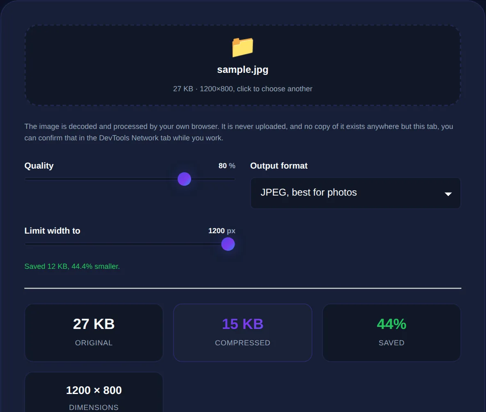

How to Compress Images Without Losing Quality
Why image files get so large, the difference between lossy and lossless compression, and how to shrink photos while keeping them sharp.
By Mubasher Hussain · Published 2026-08-02 · Updated 2026-09-01 · 1111 words · about 5 minute read
A single photo from a modern phone can weigh five or ten megabytes, which is far more than any web page, email or upload form actually needs. Compressing it means throwing away data your eye cannot see, so the file shrinks dramatically while still looking sharp. The trick is knowing how much you can remove before quality suffers, and the answer is usually "a lot more than you would expect." The Image Compressor does this in your browser, so your photos are never uploaded anywhere.
This guide explains why image files get so big in the first place, the crucial difference between lossy and lossless compression, and how to choose settings that cut file size by 70% or more without a visible drop in quality.
Why image files are so large
An uncompressed photo stores a colour value for every single pixel. A 12-megapixel phone photo therefore contains twelve million pixels, each needing several bytes, which adds up to tens of megabytes before any compression. Most of that data is redundant: large areas of a photo, a sky, a wall, a blurred background, contain thousands of pixels that are nearly identical, and the fine detail your eye cannot resolve is stored at the same precision as the detail it can. Compression exploits exactly this redundancy.

Lossy versus lossless compression
There are two families of compression, and choosing the right one is the single most important decision:
- Lossy compression permanently discards information the eye is least likely to miss. JPEG and WebP use it. It achieves huge size reductions and is ideal for photographs, where a tiny loss of fidelity is invisible.
- Lossless compression rearranges data more efficiently without discarding anything, so the image is reconstructed perfectly. PNG uses it. It is the right choice for graphics with sharp edges, text and flat colour, logos, screenshots, diagrams, where lossy artefacts would show.
The mistake people make is using the wrong family: saving a photo as PNG produces a needlessly huge file, while saving a logo as a low-quality JPEG produces ugly fuzz around the edges. Match the method to the image.
Dropping JPEG or WebP quality from 100 to 80 typically cuts file size by more than half while being visually indistinguishable. Dropping from 80 to 60 saves less and starts to show. The sweet spot for most photos is around 75-85, high enough to look perfect, low enough to be small.
How to compress without visible loss
The practical routine is straightforward. Start at a quality of around 80 and compare the result to the original at full size. If you cannot tell them apart, and at 80 you usually cannot, you are done, and you have probably saved 60-80% of the file size. Only if the image will be printed or examined closely should you push quality higher. For images destined for the web, you can often go lower still, because they are viewed at screen resolution where fine detail is lost anyway.
Resizing before compressing multiplies the savings. An image displayed at 800 pixels wide does not need to be 4,000 pixels wide; scaling it down first removes millions of pixels before compression even begins, which is why resizing and compressing together can shrink a file by 95%.
Common targets and how to hit them
Different jobs have different size goals:
- Website images: aim for under 200 KB each; hero images can be a little larger.
- Email attachments: keep the total well under the provider's limit, usually a few megabytes.
- Upload forms with a strict "max 2 MB" rule: resize then compress until you are comfortably under.
- Profile pictures and thumbnails: these are tiny on screen, so aggressive compression is invisible.
Shrink JPEG, PNG and WebP images by up to 90% with a quality slider, entirely in your browser. Your photos are processed on your device and never uploaded.
Why compressing in the browser matters
Photos are personal. They may show your family, your home, your documents or your unreleased work, and uploading them to an unknown server to "compress" them means handing over the very thing you were trying to manage. A browser-based compressor does all the work on your own device using the same image engine your browser uses to display pictures, so nothing leaves your machine. You get the file-size reduction without the privacy cost, and there is no upload wait or file-size limit imposed by a server.
Once an image is compressed, you might also convert it to a more efficient format with an image format converter, or resize it further with an image resizer. Chaining resize, convert and compress is how professionals get images that load almost instantly while still looking crisp, and doing it all locally keeps every step private.
How compression actually decides what to discard
Lossy image compression is cleverer than simply "lowering quality." It works by transforming the image into a representation based on how human vision works, then spending data where your eye is sensitive and saving data where it is not. People notice changes in brightness far more than subtle shifts in colour, and they notice smooth gradients more than fine, busy texture. Compression exploits both facts: it keeps brightness detail relatively intact while storing colour information more coarsely, and it simplifies the high-frequency detail in complex areas that the eye reads as texture rather than as specific pixels.
This is why a photograph of foliage or gravel compresses so much more successfully than a screenshot of text. The busy natural texture hides the simplifications, whereas the crisp edges of letters make every artefact visible. It also explains the single most useful habit in image optimisation: judge compression on the actual image at the actual size it will be viewed. A setting that looks lossy when you pixel-peep at 400% zoom is completely invisible at the size a visitor will really see, which means you can almost always compress harder than instinct suggests and still keep an image that looks flawless in context.
The headline lesson is that "without losing quality" really means "without losing quality you can see." Digital images carry far more precision than the eye uses, and compression simply trims the excess. Start at around 80% quality, resize to the size you actually need, match lossy or lossless to the type of image, and you will routinely cut file sizes by three-quarters or more while keeping pictures that look identical to the originals.